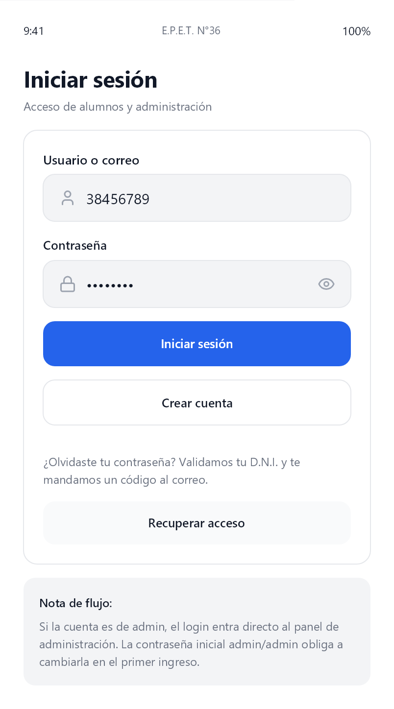
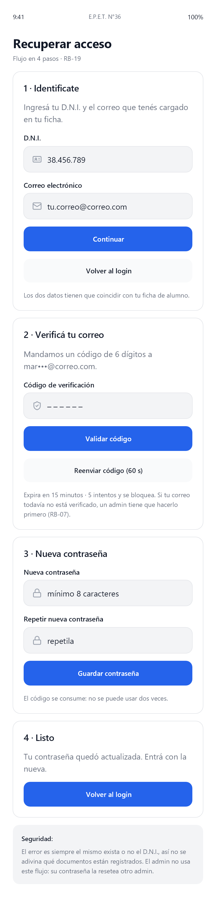
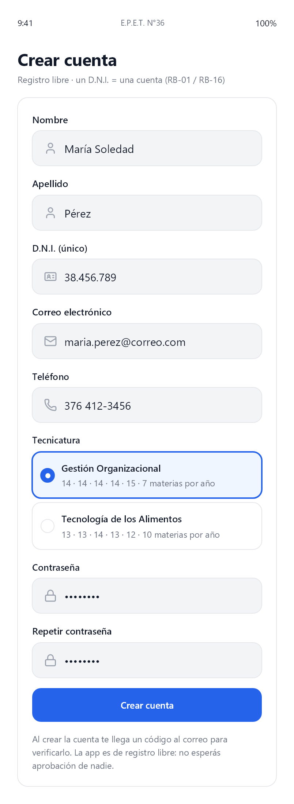
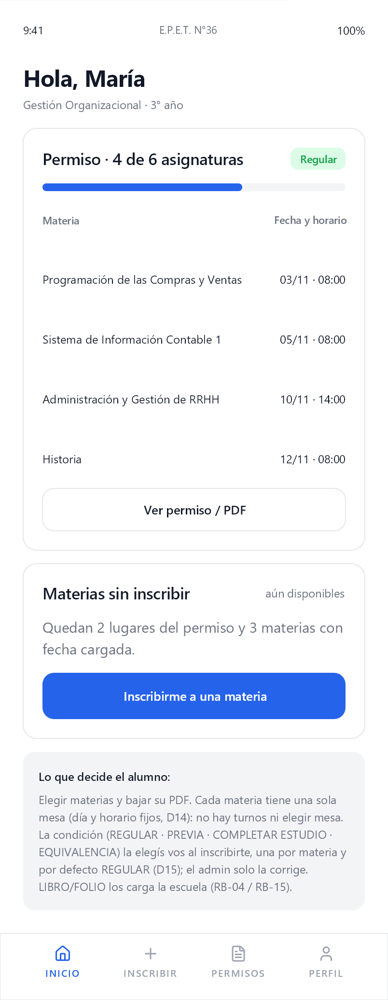
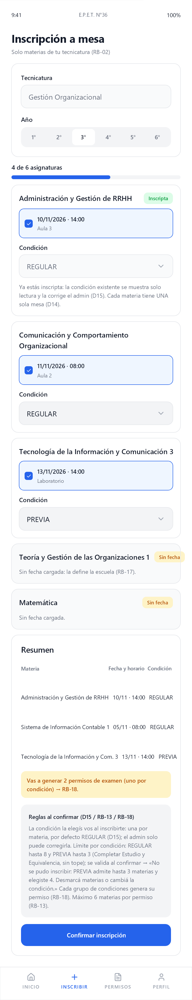
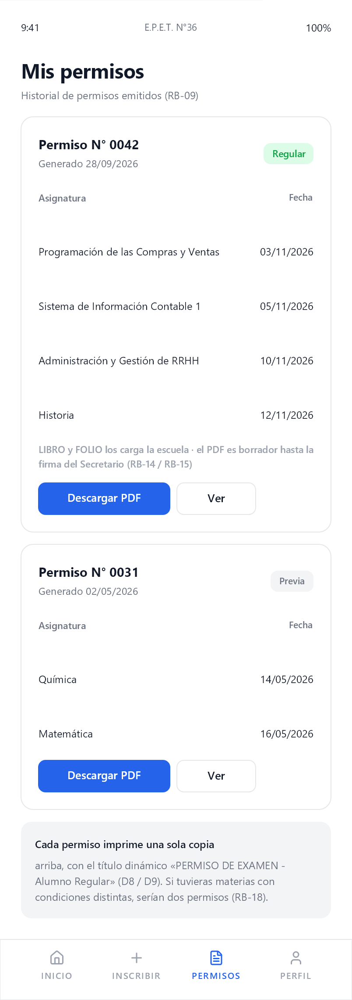
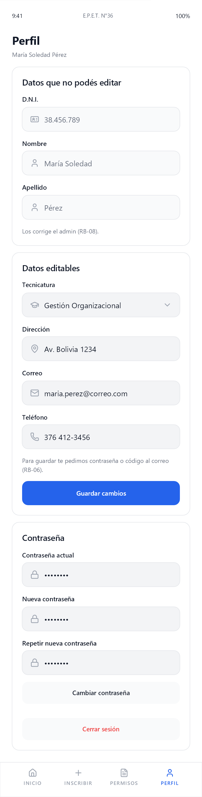
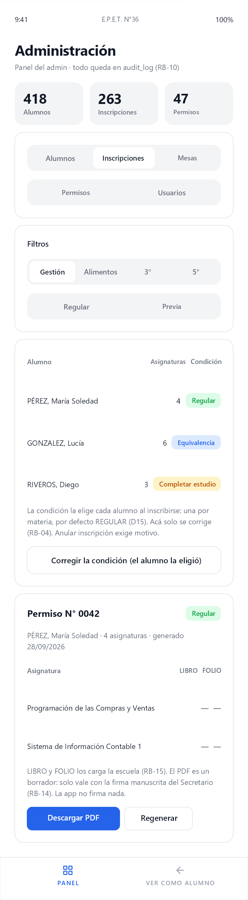

1 · Login
Iniciar sesión — Acceso de alumnos y administración

2 · Recuperar acceso
Recuperar acceso — Flujo en 4 pasos · RB-19

3 · Crear cuenta
Crear cuenta — Registro libre · un D.N.I. = una cuenta (RB-01 / RB-16)

4 · Home alumno
Hola, María — Gestión Organizacional · 3° año

5 · Inscripción a mesa
Inscripción a mesa — Solo materias de tu tecnicatura (RB-02)

6 · Mis permisos
Mis permisos — Historial de permisos emitidos (RB-09)

7 · Perfil
Perfil — María Soledad Pérez

8 · Panel admin
Administración — Panel del admin · todo queda en audit_log (RB-10)
